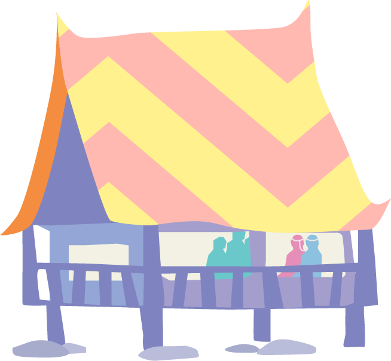
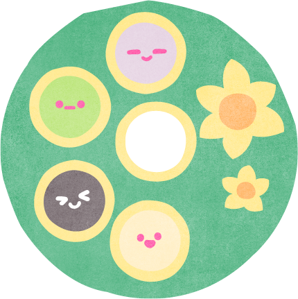
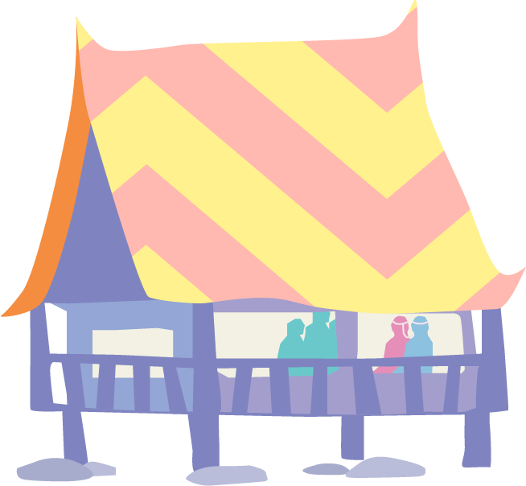
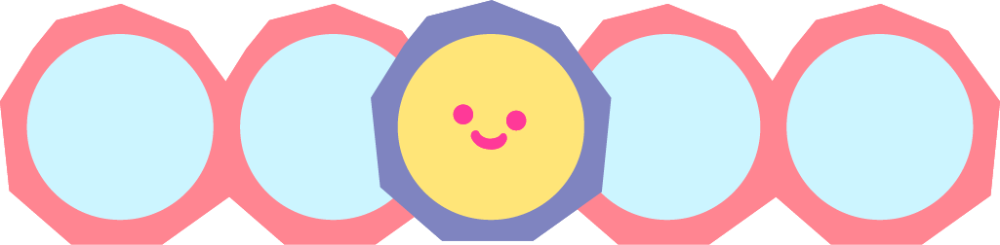
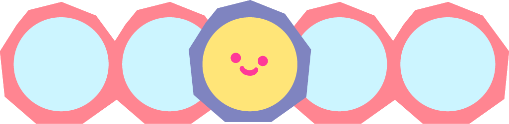
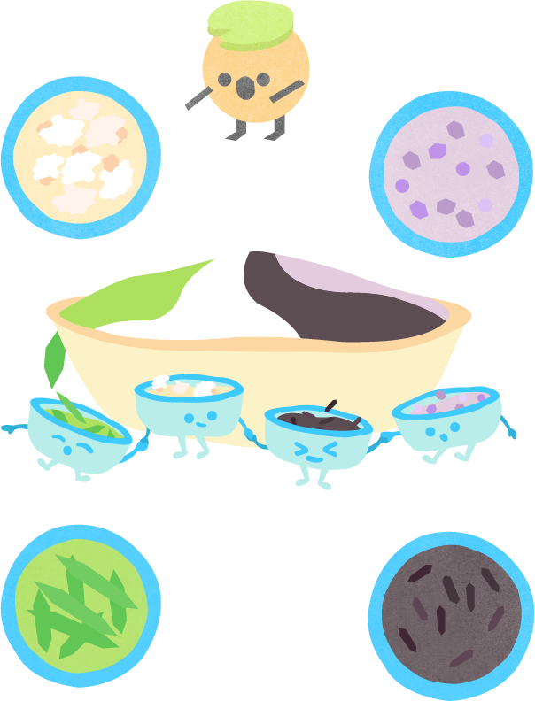
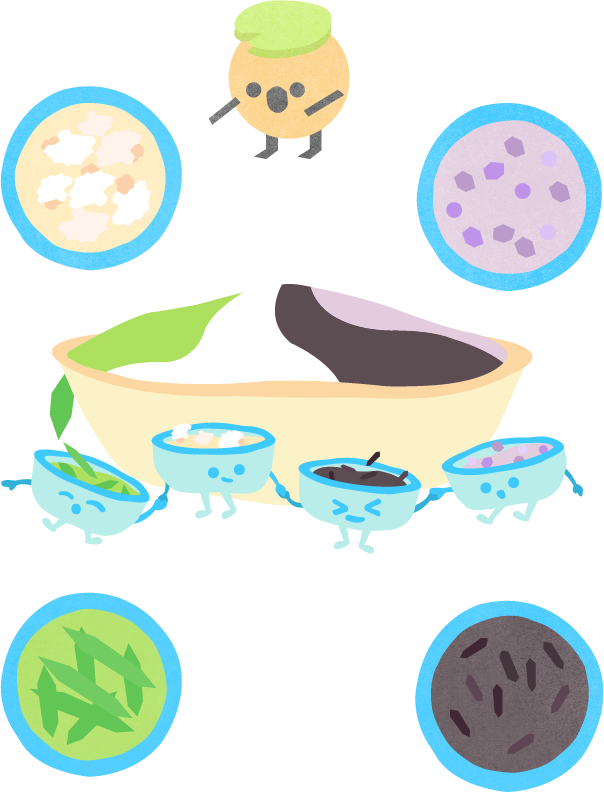

การกินสี่ถ้วยยังเป็นพิธีกรรม

เมื่อครั้งสมัยสุโขทัยผู้คนใน
ขนมกินสี่ถ้วย

การกินสี่ถ้วยยังเป็นพิธีกรรม
แต่งงานที่มีอยู่ในแผ่นดินพระร่วง
ที่มีการสืบทอดการกินสี่ถ้วยมา
ตั้งแต่ยุคสุโขทัย
ซึ่งในปัจจุบัน
มีเช่นกันแต่พบได้น้อยมาก ส่วน
มากพบบริเวณโดยรอบสุโขทัย
อย่างจังหวัดเพชรบูรณ์
จังหวัด
อุตรดิตถ์เป็นต้น

เมื่อครั้งสมัยสุโขทัยผู้คนใน
แผ่นดินเดิม ก่อนที่จะมีการ
นับถือพระพุทธศาสนา มีความ
เชื่อเกี่ยวกับประเพณีการ
แต่งงาน คือ การเลี้ยง
ผีบรรพบุรุษของ 2 ตระกูล ด้วย
ของเซ่นไหว้ 4 เตียบ
เพื่อให้เป็น
ทองแผ่นเดียวกันโดยสมบูรณ์
เรียกประเพณีนี้ว่า "กินสี่ถ้วย"

คนโบราณมีความเชื่อว่า ที่อยู่อาศัยนั้น

ตามความเชื่อที่ว่าเลี้ยงผีต้องใช้ 4

ประเพณีแต่โบราณ
"พิธีไหว้บรรพบุรุษ"
คนโบราณมีความเชื่อว่า ที่อยู่อาศัยนั้น
มีผีบ้านผีเรือนอีกทั้งเชื่อว่าบรรพบุรุษ
อันได้แก่
ปู่ย่าตายาย
ยังคอยคุ้มครอง
ดูแลถ้าจะทำการใดๆ
จะต้องบอก
กล่าวเป็นการขอขมาลาโทษหรือให้รับ
รู้ว่ามีบุคคลอื่นมาเป็นเขย
มาเป็น
สะใภ้ จึงจัดพิธีไหว้ผีโดยนำสิ่งของมา
เส้นบวงสรวง ได้แก่ กินสี่ถ้วยนั่นเอง

ตามความเชื่อที่ว่าเลี้ยงผีต้องใช้ 4
ถ้วย ดังนั้นการจัดสำรับ อาหาร
จึงทำเป็น 5 ถ้วยเพื่อให้คนกิน
โห~ ถ้วยเยอะจัง
ความหมายก็ต่างกันนะ
วัตถุดิบ
 

มะลิลอย
ข้าวตอก
ไข่กบ
เมล็ดแมงลัก
นกปล่อย
ลอดช่อง
อ้ายตื้อ
ข้าวเหนียวดำ
ไข่กบหมายถึงมีลูกเต็มบ้าน
มีหลานเต็มเมือง
นกปล่อยหมายถึงความรักยืนยาว
อ้ายตื้อหมายถึงรักแน่นเหนียว
มะลิลอยหมายถึงความรักเบ่งบาน
ว้าวววววววววววว
ทำไมถึง
เริ่มเลือนลาง
ด้วยยุคสมัยที่มีการแต่งงานเน้น
ประเพณีแบบชาติตะวันตกมากขึ้น
อีกทั้งการทำขนมนั้นมักมาคู่กับ
การเตรียมเครื่องเซ่นชนิดอื่น
การเตรียมการจึงยิ่งทวีความยาก


มุ่งสู่อดีต ฉากกถัดไปกันเลย!